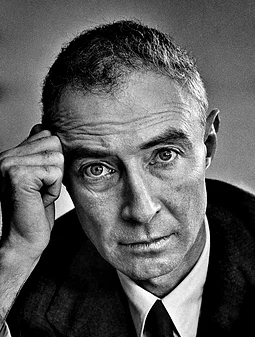

Biografia
J. Robert Oppenheimer (1904–1967) foi um dos físicos mais brilhantes do século XX. Sua trajetória ficou marcada por liderar a criação da arma mais destrutiva da humanidade e, posteriormente, pelos dilemas morais que enfrentou.Em 1942, durante a Segunda Guerra Mundial, o governo dos EUA o nomeou diretor científico do Projeto Manhattan. No laboratório secreto de Los Alamos, Oppenheimer coordenou com sucesso os maiores cientistas da época para construir a primeira bomba atômica antes dos nazistas. O projeto culminou no Teste Trinity, em julho de 1945, e no subsequente bombardeio de Hiroshima e Nagasaki, que encerrou a guerra. Ao ver o poder da explosão nuclear, Oppenheimer citou a famosa frase hindu: "Agora eu me tornei a Morte, a destruidora de mundos".No pós-guerra, assombrado pelo potencial de aniquilação global, ele mudou radicalmente de postura. Oppenheimer passou a defender o controle internacional de armas nucleares e opôs-se firmemente ao desenvolvimento da bomba de hidrogênio.Essa resistência o transformou em alvo político durante a paranoia anticomunista da Guerra Fria. Em 1954, no auge do Macarthismo, ele foi acusado de traição e teve sua credencial de segurança revogada pelo governo americano. Afastado do poder, passou seus últimos anos na vida acadêmica antes de morrer em 1967. Seu legado permanece como o maior símbolo dos limites éticos da ciência.

Marcos de sua vida
- 1904: Nasce em Nova York no dia 22 de abril.
- 1925: Formou-se em Química pela Universidade de Harvard em apenas três anos.
- 1927: Conclui o doutorado em Física na Universidade de Göttingen, na Alemanha, com apenas 23 anos.
- 1929: Inicia as aulas como professor assistente na Universidade de Berkeley, onde criou uma escola de física teórica.
- 1939: Publica o primeiro artigo teórico prevendo a existência de buracos negros (junto com Hartland Snyder).
- 1942: É nomeado diretor científico do Projeto Manhattan pelo general Leslie Groves.
- 1945: Coordena o Teste Trinity (julho) e testemunha o bombardeio de Hiroshima e Nagasaki (agosto).
Cientistas que trabalharam no Projeto Manhattan
- Enrico Fermi: Físico italiano que criou o primeiro reator nuclear do mundo (Chicago Pile-1). Ele foi fundamental para validar a reação em cadeia e supervisionou a física experimental em Los Alamos.
- Richard Feynman: Um jovem e brilhante físico teórico que liderou o grupo de computação humana (cálculos matemáticos complexos) e ficou famoso por sua excentricidade e por abrir cofres de segurança do projeto.
- Hans Bethe: Físico alemão nomeado por Oppenheimer como o chefe da Divisão Teórica em Los Alamos. Ele coordenou os cálculos de rendimento da explosão e depois ganhou o Prêmio Nobel.
- Edward Teller: Físico húngaro que focou no desenvolvimento da implosão, mas que frequentemente entrava em conflito com Oppenheimer porque queria focar na criação de uma bomba ainda mais destrutiva: a bomba de hidrogênio (fusão nuclear).
- Niels Bohr: Físico dinamarquês e mentor de uma geração. Ele fugiu da Europa ocupada pelos nazistas e atuou como um consultor sênior em Los Alamos sob o codinome de "Nicholas Baker", servindo também como uma bússola moral para os cientistas.
- Klaus Fuchs: Físico alemão que trabalhou nos cálculos de implosão da bomba de plutônio. Mais tarde, descobriu-se que ele era um espião soviético que passou segredos cruciais do projeto para a URSS.
O Conflito Ético de Oppenheimer: Da Bomba ao Arrependimento
| O Momento ou Decisão | O que ele sentia/defendia antes | O que ele passou a defender | A Frase ou Ação Marcante |
|---|---|---|---|
| O desenvolvimento da bomba | Achava necessário criar a arma antes dos nazistas para salvar o mundo livre. | Percebeu que iniciou uma corrida armamentista imparável e perigosa. | "Os físicos conheceram o pecado; e este é um conhecimento que eles não podem perder." |
| O uso militar no Japão | Apoiou o uso imediato das bombas em Hiroshima e Nagasaki para forçar a rendição rápido. | Ficou horrorizado com o sofrimento civil e sentiu que o massacre era desnecessário. | Disse ao presidente Truman: "Sinto que tenho sangue nas minhas mãos." |
| O futuro das armas (Bomba H) | Defendia o avanço da física quântica e do poder do átomo sem limites governamentais. | Opôs-se veementemente à Bomba de Hidrogênio, chamando-a de arma de genocídio. | Usou seu cargo político para tentar banir e controlar o desenvolvimento de superarmas. |
| O controle internacional | Acreditava no segredo militar dos Estados Unidos durante a guerra. | Defendeu que a tecnologia nuclear deveria ser compartilhada e fiscalizada por um órgão mundial. | Propôs a criação de um comitê global para evitar guerras nucleares. |